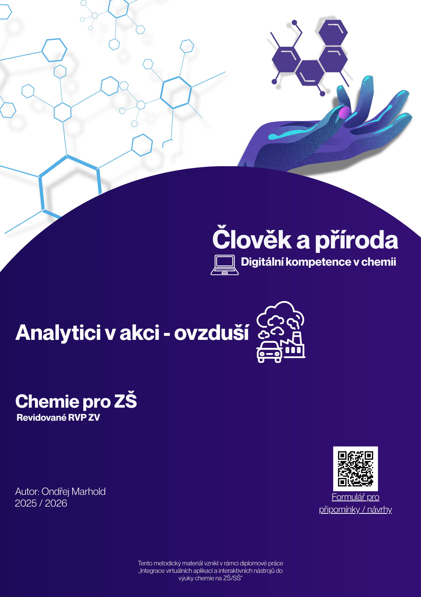

Analytici v akci - ovzduší
Člověk a příroda, digitální kompetence v praxi


Když se zeptáte, kdo znečišťuje ovzduší nejvíce, většina lidí automaticky ukáže na průmysl a dopravu. Tento 45minutový výukový modul pro 9. ročníky ZŠ učí žáky pracovat s reálnými daty o emisích v ČR. Cílem je, aby se žáci nenechali manipulovat mediálními zkratkami a uměli činit informovaná rozhodnutí.
Cíle a vazba na RVP ZV
Aktivita přímo naplňuje výstupy pro chemii i novou informatiku. Žáci analyzují a interpretují dostupná data o složení ovzduší (CAP-CHE-002-ZV9-006). V rámci rozvoje digitálních kompetencí získávají informace z interaktivních modelů (INF-INF-001-ZV9-001) a využívají technologie ke zkvalitnění své práce (KDI-VIN-000-ZV9-001). Z hlediska kognitivní náročnosti žáci aplikují data při řešení případových studií a kriticky hodnotí své vlastní původní odhady.
Použité nástroje: Flourish a Coda
Pro vizualizaci složitých dat (např. hierarchických struktur neboli treemaps) modul využívá aplikaci Flourish Studio, která dokáže tvořit vysoce interaktivní a vizuálně atraktivní grafy. Tyto grafy jsou následně "přišpendleny" (embedovány) do cloudového dokumentu v platformě Coda. Výsledkem je jednotné online prostředí, do kterého žáci vstupují pouze pomocí QR kódu bez nutnosti jakéhokoliv přihlašování.
Jak to funguje ve výuce (E-U-R)
- Evokace (5 min): Učitel vyzve žáky k hlasování (např. pomocí lepicích papírků nebo aplikace Slido, nebo klasicky psaním na tabuli): Kdo vypouští do vzduchu nejvíce jedovatého prachu – průmysl, doprava, nebo domácnosti? Výsledek hlasování zůstává viset na tabuli pro závěrečnou reflexi.
- Uvědomění (30 min): Žáci samostatně pracují s interaktivním dokumentem. Vžívají se do rolí starostů či ministrů a řeší konkrétní problémy.
- Reflexe (10 min): Dochází ke konfrontaci počátečního hlasování s reálnými daty z grafů. Hodina je zakončena metodou "Exit-ticket", kde žáci reflektují, co je při práci s daty nejvíce překvapilo.
Materiály ke stažení a odkazy
Zde naleznete kompletní metodické listy, žákovské pracovní listy a odkazy na připravené interaktivní plochy.